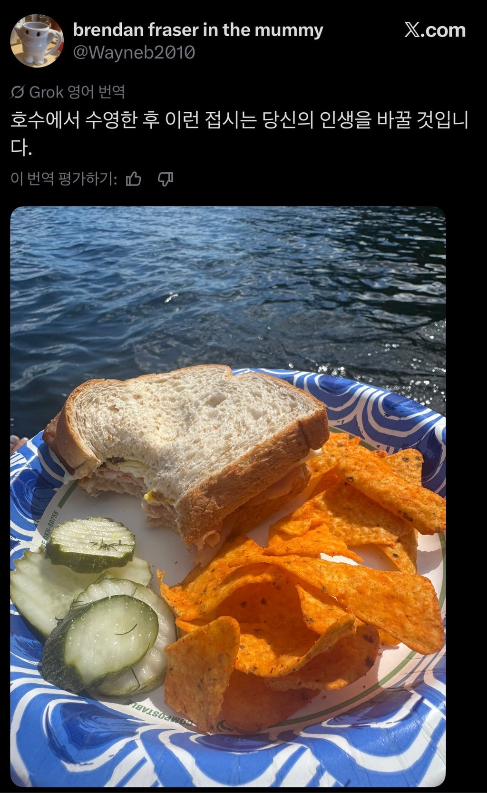
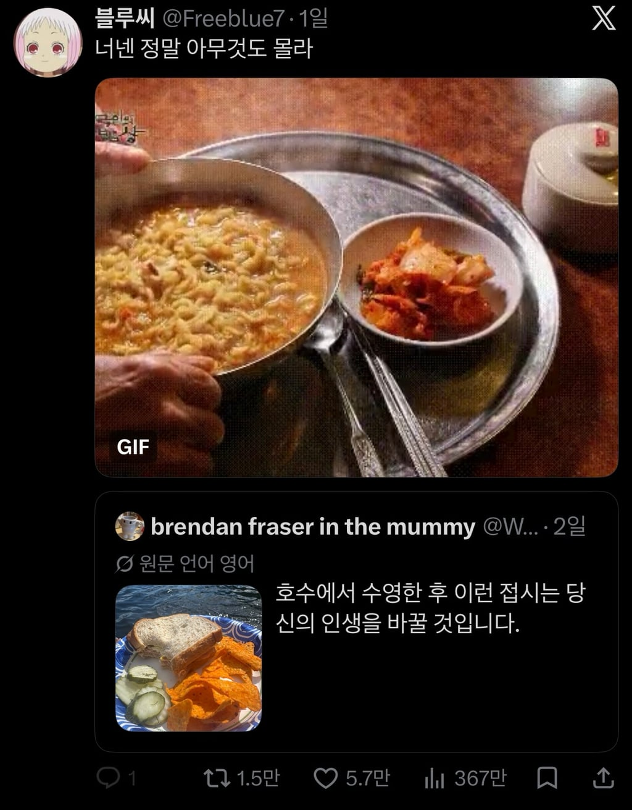

한국인 : 일마 이거 맛알못 새끼네 ㅋㅋㅋ


한국인 : 일마 이거 맛알못 새끼네 ㅋㅋㅋ
물놀이하고 라면 먹으면 진짜 미치지
이상하게 사진처럼 저런 라면은 계란 풀어야 맛도리..
맞아 ㅋㅋㅋ 심지어 살짝 좀 퍼져야됨
어..난좀 반댄데.. 대충만들어 들익어서 꼬들꼬들 해야
저 라면, 수영같은거 하고나서 먹으면 아마 오르가즘 느낄꺼야
일마이거 물장구만 치다왔노 ㅋㅋ 수영을 했으며는 그딴건 못묵제 ㅋㅋㅋ
핫바 없냐
진짜 궁금하긴 하다..
라면이 훨씬 더 우월할까 그냥 문화의 차이일까
외국인들이 수영하고 라면먹으면 '내가 먹던게 개 병신같은거였구나' 하면서 각성할까
왓더뻑 하면서 샌드위치 나쵸 피클을 먹으러 도망갈까?
국물요리가 체온 올리는데 직빵이라 무조건 라면이 이김.
외국인은 지금 신라면은 매워서 못먹을지도 ㅋㅋㅋㅋ
그런데 저쪽도 국물요리가 저 빵보단 우위일꺼임.
영화보면 스프를 물 처럼 묽게했는지 컵에 따라서 마시더라 ...
인생을 비참하게 바꾸는 걸까
저 상황에선 컵라면 소컵이 최강인데
육개장 goat ...
육작이 최강
"킹개장"
육작 국물까지 쭈우욱 다 마시면 체온 훅 올라가고 몸으로 쏙쏙 흡수되는 느낌남
피클 존나 신선하고 아삭해보인다
육개장에 불벅이 진리다
한강 수영장에서 먹었던 육개장의 맛을 잊지 못해
물놀이하고 식욕이 올라가는듯
캬시발근데 김치가 왜이리 적냐 라면 때깔보면 3배는 더있어야할거같네